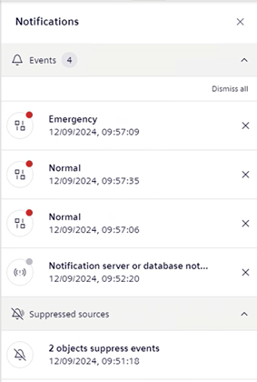

Handle Flex Client Notifications
You can display and handle the different Flex notification messages, including password expiration or events/suppressed objects/license (if display and behavior for those types of notification was set. See Personalize Notifications.)
Display Notification Messages
- In the horizontal navigation bar, a counter on the Notifications icon tells you that there are some notifications that require your attention.
- Select .
- The right panel expands. Under Notifications, it displays all the messages since the last time the operator cleared the last ones. These notifications are grouped per type.

- To collapse the right panel, do one of the following:
- In the horizontal navigation bar, select again .
- In the right panel, select .
View and Dismiss Event Notification Messages
- You set the display of event notification messages.
- The right panel is open.
- Under Notifications, locate Events.
- A counter of events displays and increases each time a new notification of this type arrives. In addition, a single notification displays for each new active events.
- Do one or more of the following:
- Select next to a notification to clear it.
- If more than three notifications of this type arrive, select Dismiss all to clear all of them.
- Select a notification to view Event List filtered to show only those new events.
- The counter decreases each time a notification of this type is cleared.
View the Suppressed Objects Notification Message
- You set the display of the suppressed objects notification message.
- The right panel is open.
- Under Notifications, locate Suppressed sources.
- A single notification displays and indicates the number of suppressed objects that you can view based on your user role and system objects visibility rights.
- A counter of suppressed objects increases each time a new notification of this type arrives.
View the License Notification Message
- You set the display of the license notification message.
- The right panel is open.
- Under Notifications, locate License.
- A single notification displays and indicates the license session (Engineering Mode, Courtesy Mode, or Demo Mode) due to expire and its time limit.
Handle the User Account Notification Message
- In Change Your Password, see Change Your Password when it is About to Expire.